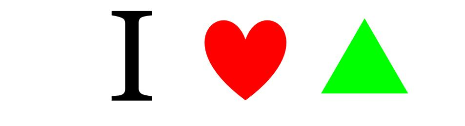
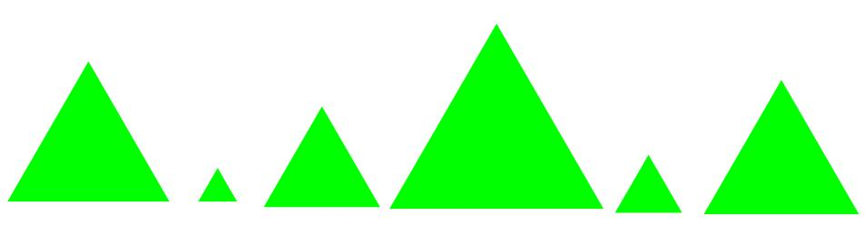

Functions Make Life Easier!
(Also available in Pyret)
Students discover that they can make their own functions.
|
Lesson Goals |
Students will be able to:
|
|
Student-Facing Lesson Goals |
|
|
Materials |
|
|
Key Points for the Facilitator |
|
define-
to associate a descriptive name with a value
domain-
the type or set of inputs that a function expects
function-
a relation from a set of inputs to a set of possible outputs, where each input is related to exactly one output
value-
a specific piece of data, like 5 or "hello"
variable-
a name or symbol that stands for some value or expression, often a value or expression that changes
| There’s Got to Be a Better Way! | 15 minutes |
Overview
In this lesson, students will build their flexibility of thinking by engaging with multiple representations. Students will search for structures that are dynamic, meaning they change in a predictable way. This is the foundation for defining functions.
Launch
This is a fun lesson to make silly! Dramatically confess to your students, "I LOVE green triangles!" Challenge them to use the Definitions Area to code as many unique, solid, green triangles as they can in 2 minutes.

{kind=link}

{kind=link}
Walk around the room and give positive feedback on the green triangles. When the time is up, ask for some examples of green triangles that they wrote and copy them to the board.
For example:
(triangle 30 "solid" "green")
(triangle 12 "solid" "green")
(triangle 500 "solid" "green")
Invite students to analyze the examples you recorded by posing the following questions:
-
Is there a pattern?
-
Yes, the code mostly stayed the same with one change each time.
-
-
What stayed the same?
-
The function name
triangle, "solid", "green".
-
-
What changed?
-
The size of the
triangle, or the Number input.
-
-
How many of you typed out the code from scratch each time?
-
How many triangles were you able to code in a minute?
-
Write this down so that you can compare to it later!
-
Investigate
Our programming language allows us to define values. This lets us create "shortcuts" to reuse the same code over and over.
For example:
(define gt (triangle 65 "solid" "green")) allows us to make the same solid, green triangle anywhere we want, just by writing gt - without having to write all of the code again and again. But… it makes the same green triangle every time.
To make a shortcut that changes such as creating solid, green triangles of a changing size, we need to define a function.
Suppose we want to define a function called gt. When we give it a number, it makes a solid green triangle of whatever size we give it. What will (gt 5) produce? (triangle 5 "solid" "green")!
Select a student to act out gt. Make it clear to the class that their Name is "gt", they expect a Number, and they will produce an Image.
Just as with any acting career, this one will begin with a rehearsal. When I say, "gt 5!", you say, "triangle 5 solid green!" Let’s try it.
-
Teacher: gt 5!
-
Student:
(triangle 5 "solid" "green")! Note: Have the actor ignore the punctuation, and just say "triangle 5 solid green!" -
Teacher: gt 20!
-
Student:
(triangle 20 "solid" "green")! -
Teacher: gt 200!
-
Student:
(triangle 200 "solid" "green")! -
Teacher: gt 99!
-
Student:
(triangle 99 "solid" "green")!
That was a great rehearsal. You’re ready for the stage! Now it’s the class' turn to give you cues! Who’s got a gt expression for our actor?
Go around the room soliciting gt expressions from students until it’s clear that everyone could run this script in their sleep.
Synthesize
Thank your volunteer.
Assuming they did a wonderful job, ask them: How did you get to be so speedy at building green triangles? You seemed so confident! Ideally they’ll tell you that they had good instructions and that it was easy to follow the pattern.
Just as we were able to give our volunteer instructions that let them take in gt 20 and give us back (triangle 20 "solid" "green"), we can define any function we’d like in the Definitions Area.
| Identifying and Describing the Pattern | flexible |
Overview
Students will look for what’s changing in the examples, label it with a variable and use that information to write a function definition. Students will also think about how the Domain of gt differs from the Domain of triangle. By the end of the lesson they will have defined functions of their own design.
Launch
We need to program the computer to be as smart as our volunteer. But how do we do that? In order to define a function, we need to identify what’s changing and what stays the same. Invite students to take a look at the examples for gt below:
(gt 5) → (triangle 5 "solid" "green")
(gt 10) → (triangle 10 "solid" "green")
(gt 25) → (triangle 25 "solid" "green")
(gt 100) → (triangle 100 "solid" "green")
(gt 220) → (triangle 220 "solid" "green")
-
What’s changing?
-
The size. Everything else is the same in every single example!
-
Highlight or circle the numbers in the gt column and in the triangle column to help students see that they’re the only thing changing! Explain that we can define our function by replacing the numbers that change with a variable that describes them. In this case, size would be a logical variable.
Draw arrows to the two highlighted columns and label them with the word size.
If we keep everything that stayed the same and substitute size for the numbers that changed, it looks like this:
(gt size) → (triangle size "solid" "green")
The way we write this in the editor is
(define (gt size) (triangle size "solid" "green"))
-
Turn to The Great gt domain debate!.
-
On this worksheet, you will "decide and defend" whether Kermit’s assertion that The domain of
gtisNumber, String, Stringor Oscar’s assertion that The domain ofgtisNumberis correct.
In the case of gt, the domain was a number and that number stood for the size of the triangle we wanted to make. Whatever number we gave gt for the size of the triangle is the number our volunteer substituted into the triangle expression. Everything else stayed the same no matter what!
-
Why might someone think the domain for
gtcontains a Number and two Strings?-
The function
gtonly needs one Number input because that’s the only part that’s changing. The functiongtmakes use oftriangle, whose Domain is Number String String, butgtalready knows what those strings should be.
-
Next, direct students to open the gt Starter File, and save a copy of their own. After clicking "Run" and evaluating (gt 10) in the Interactions Area (they will see a little green triangle appear!), challenge them to take one minute to see how many different green triangles they can make using the gt function.
-
How many were you able to make?
-
How did making green triangles with
gtcompare to making them with your previous strategy?
Investigate
Explain to students that they have successfully defined a function to satisfy your love of green triangles… but other people have other favorite shapes and we need to be able to meet their needs, too. Let’s take what we’ve learned to define some other functions.
-
What if we wanted to define a function
rsto make solid red squares of whatever size we give them? Try it out on Let’s Define Some New Functions!. -
Add your new function definitions to your gt Starter File and test them out.
-
When you’re ready, move on to Let’s Define Some More New Functions! and Describe and Define Your Own Functions!
As students work, walk around the room and make sure that they are circling what changes in the examples and labeling it with a variable name that reflects what it represents.
Connecting to Best Practices Writing examples and identifying the variables lays the groundwork for writing the function, which is especially important as the functions get more complex. It’s like "showing your work" in math class. Don’t skip this step! |
Synthesize
-
Why is defining functions useful to us as programmers?
-
In math class we mostly see functions that consume numbers and produce numbers, but functions can consume values besides Numbers! What other data types did you see being consumed by these functions?
These materials were developed partly through support of the National Science Foundation,
(awards 1042210, 1535276, 1648684, and 1738598).  Bootstrap by the Bootstrap Community is licensed under a Creative Commons 4.0 Unported License. This license does not grant permission to run training or professional development. Offering training or professional development with materials substantially derived from Bootstrap must be approved in writing by a Bootstrap Director. Permissions beyond the scope of this license, such as to run training, may be available by contacting contact@BootstrapWorld.org.
Bootstrap by the Bootstrap Community is licensed under a Creative Commons 4.0 Unported License. This license does not grant permission to run training or professional development. Offering training or professional development with materials substantially derived from Bootstrap must be approved in writing by a Bootstrap Director. Permissions beyond the scope of this license, such as to run training, may be available by contacting contact@BootstrapWorld.org.